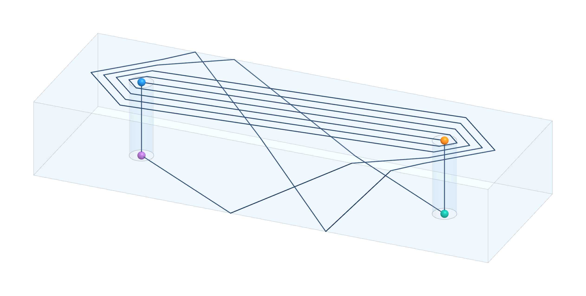
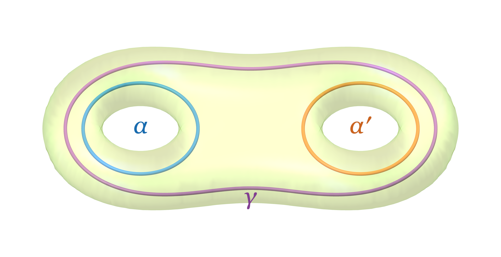
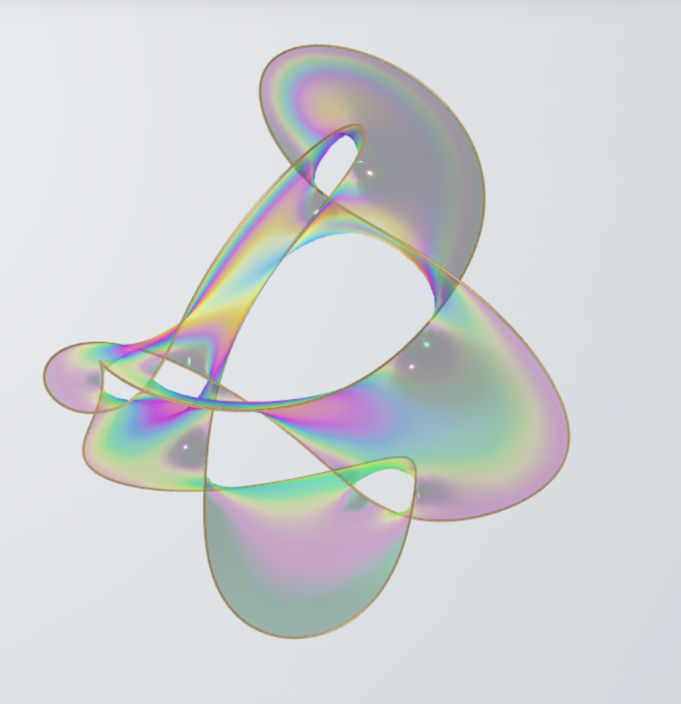

An AI agent formalized in Lean the mathematical machinery behind the colored Jones function computation, and parts of the counterexample argument.
Abstract
Let $K$ be a knot in $S^3$. The strong AJ conjecture relates two of its invariants. The first is the minimal-order annihilator $\widehat A$ of the $n$th colored Jones polynomial $J(n)$. The second is the two-variable $A$-polynomial of Cooper, Culler, Gillet, Long, and Shalen. The conjecture says that after specialization $\varepsilon^*(\widehat A)\asymp A$. Zhang gave the first family of composite-knot counterexamples. For $8_{11}$ the specialization of $\widehat A$ carries an extra trefoil factor $L+M^6$. We prove this by verifying Lê's $\widehat P=\widehat A$ conjecture. Zhang's corrected formulation of the AJ conjecture agrees with Lê's weak AJ conjecture, which we prove for $8_{11}$. Li, Li, and Sun have since reported counterexamples of the weak AJ conjecture among non-hyperbolic prime knots. This work was AI assisted, and parts of it have been formalized in Lean.
Problem
The strong AJ conjecture predicts that the specialization of the minimal annihilator of a knot's colored Jones polynomial equals the A-polynomial. Zhang's known counterexamples were composite knots, so the question was whether a hyperbolic prime knot also fails the conjecture.
Approach
The authors compute an annihilating operator P̂ for 2-bridge knots using Lê's skein-module method on a genus-2 handlebody. They prove minimality (P̂ = Â) with Casoratian and exterior-power factor-exclusion arguments, including specialization at q=2 and factorization modulo primes. Colored Jones values were obtained by fusion evaluation and fed to a q-holonomic recurrence solver. With AI agent assistance, parts of the machinery for computing the colored Jones function were formalized in Lean.

Figure 1: The genus 2 handlebody for 4_{1} .

Figure 2: The loops \alpha , \alpha^{\prime} , and \gamma .
Results
For the knot 8_11, the specialized minimal annihilator carries an extra trefoil factor L+M^6 beyond the A-polynomial, so the strong AJ conjecture fails for hyperbolic prime knots. The weak AJ conjecture is proved for 8_11.

Figure 13: 8_{11} and a soap film rendering of a minimal surface representative of its Bennequin surface.